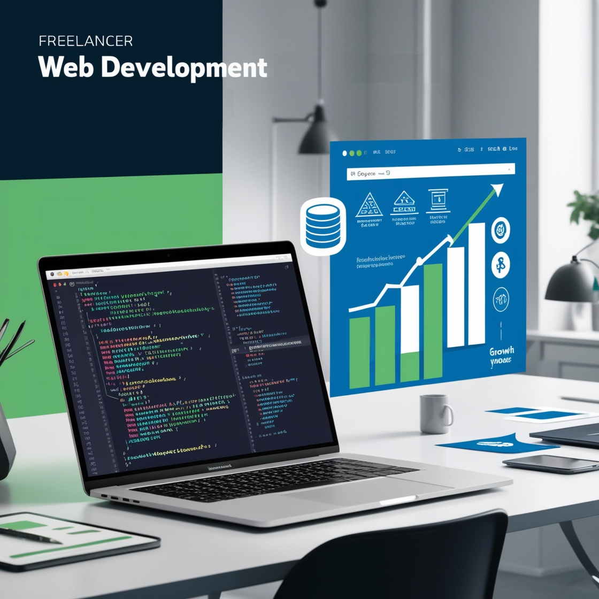

About Me
I am a passionate developer focused on responsive web design, JavaScript, and API development. With over 250 hours of practical experience, I have created user-friendly and functional web solutions for various clients. My goal is to deliver high-quality projects that meet users' needs and expectations.
- Certified in responsive web design
- Experienced in relational databases
- Expertise in JavaScript and frontend libraries
Opportunities of the Future
Explore how modern web design can transform the way we interact with technology.
